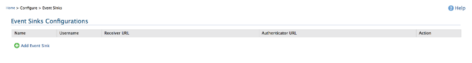
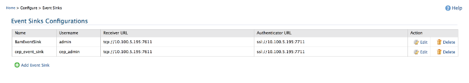
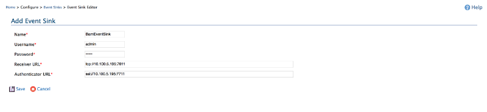

Configuring Event Sinks
Before adding a BAM mediator to a mediator sequence BAM mediator configurations should be updated
as below. Configuration information are basically considered as a set of BAM server profiles
which contains transport and credential data required to connect to the BAM server. In each BAM
server profile one or many Event Stream configurations should be defined. Streams contains CEP
event stream related information like Stream Name, Stream Version etc and data to be extracted
from the configuration context of the mediation sequence.
- To go to the configuration of Event Sinks go to ESB management console Configure→Event
Sinks
menu.
- If there are no existing Event Sinks (in the very first time) click Add
Event Sink to
add a new Event Sink.

- If there are Event Sinks already existing either creation of new Event or editing an already
existing Event Sink is possible by clicking on their Edit link. If
there are unnecessary Event Sink they can be deleted by clicking on their
delete
link.

- Enter a name for Event Sink in Name.
- Enter Credentials revelant to the data-bridge end point in Username and Password.
- In Server Transport select Thrift as the default
Protocol.
- If message confidentiality is required from ESB server to BAM server tick on Enable
Security.
- Enter the IP address of the BAM server's Thrift server as the IP Address.
By default it is the IP address of the localhost.
- If security was not enabled Receiver Port will be asked and enter 7611
by default which is the Thrift server port.
- Authentication Port should be given the port number of 100 higher than the
Receiver Port if it exists. Default Authentication Port
number is 7711.
